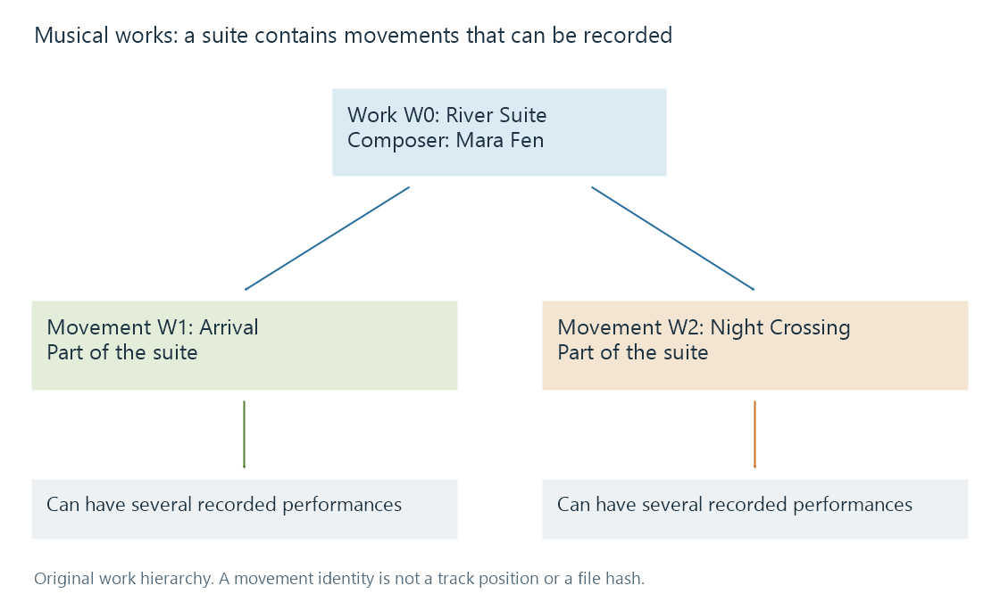

Musical works and compositions
A musical work identifies a composition or other created musical material independently of the recordings and releases that express it.
Three musicians can perform the same composition at different tempos, with different instruments and on different occasions. A library that knows only the song title can list those performances; a catalogue that also knows the work can explain why they belong together.
The work is the created musical material. A recording is a particular recorded realization. A release makes recordings available in an issued product. These identities answer different questions.
The composition has its own credits
In an original example, Mara Fen composes River Lights, Ivo Reed writes its lyrics, and Mira Vale records a performance. A later recording by the Harbour Quartet still relates to the composition, while its performers and production credits differ.
| Question | Relevant scope |
|---|---|
| Who composed River Lights? | Work |
| Who wrote its lyrics? | Work |
| Who sings on this recorded version? | Recording and performance credits |
| Which album includes this track? | Release and track occurrence |
| Which codec is in the local file? | Playable resource |
Setting every one of those fields to Mira Vale would make a convenient artist label while erasing the composition's authorship. A composer need not be a performer, and an instrumental performance need not contain the work's lyrics.
Larger works can contain smaller works
A symphony, suite or opera can organize constituent movements or numbers. The fictional River Suite contains Arrival and Night Crossing as movements:

The diagram is an original relationship model. A movement's title can be shared by its recordings without making the movement itself an audio file. One recorded track can also cover more than one work, as with a medley, so work-to-track relationships are not restricted to one work per file.
An ordinary collection of songs is not automatically a single composite composition. The album's track sequence and the work's authored structure are separate evidence.
Identifiers retain that scope
MusicBrainz assigns entity identities to works and relates them to recordings and credited contributors. The International Standard Musical Work Code, or ISWC, identifies a musical work. Neither identifies the bytes of a particular MP3 or the product edition of an album.
A work title alone is weaker evidence. Two unrelated compositions can share the same title, while one composition can have alternate titles. Matching therefore needs context such as creators and catalogue identity.
Emby's music library reads embedded tags, as described in Music Naming. Composer and other descriptive fields can preserve useful work information even when a particular browsing interface does not expose the complete work graph. A title like River Suite: II. Night Crossing communicates a hierarchy to a person; explicit work relationships make that hierarchy usable as data.
See Also
- Music recordings and track occurrences
- Classical music credits
- MusicBrainz identifiers
- Metadata relationships